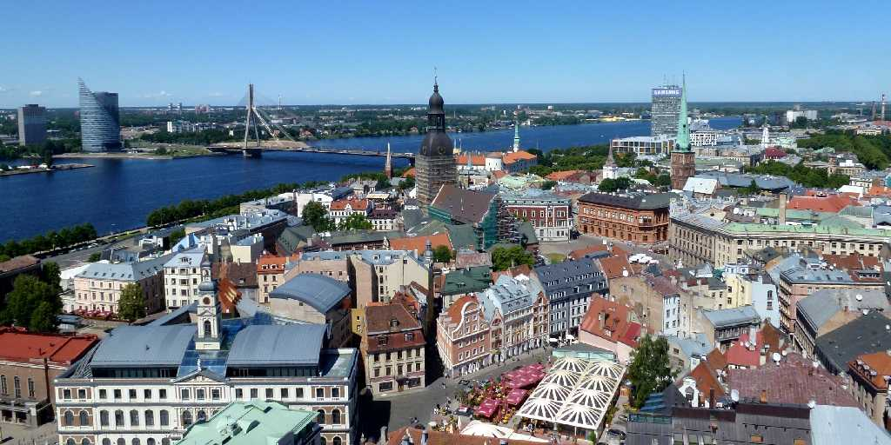
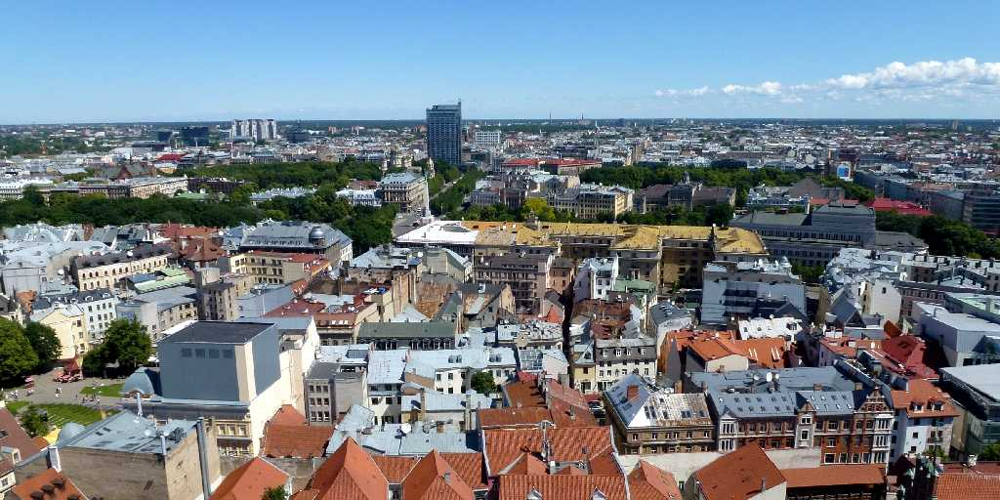
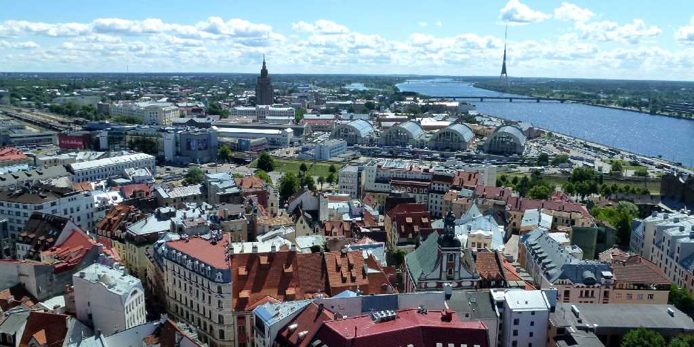
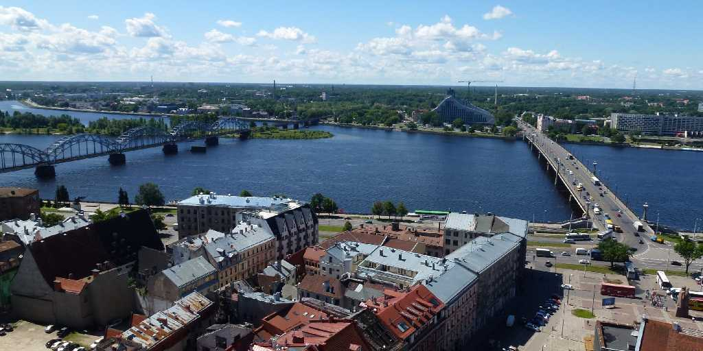
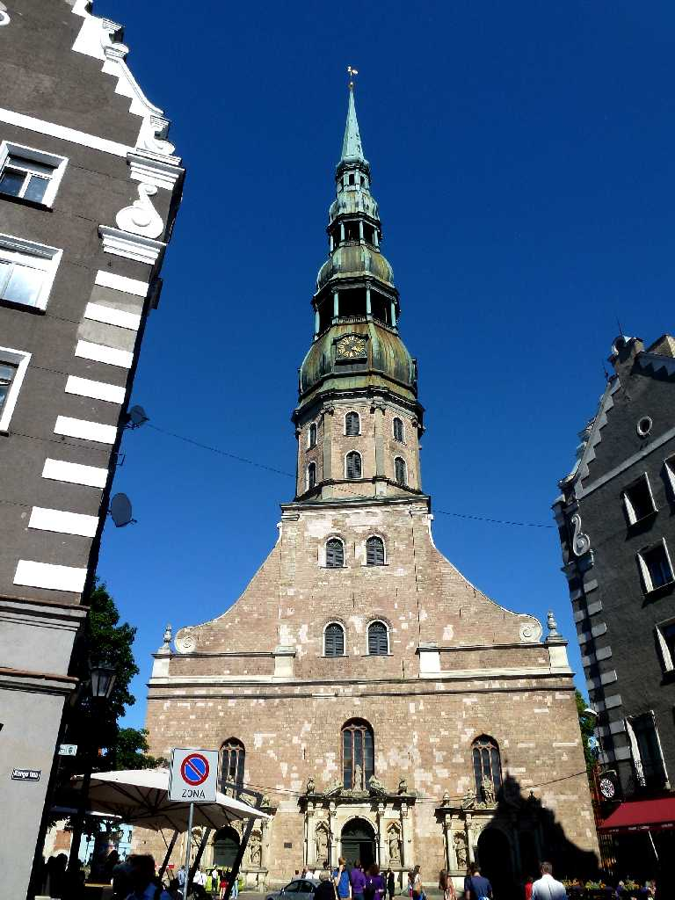
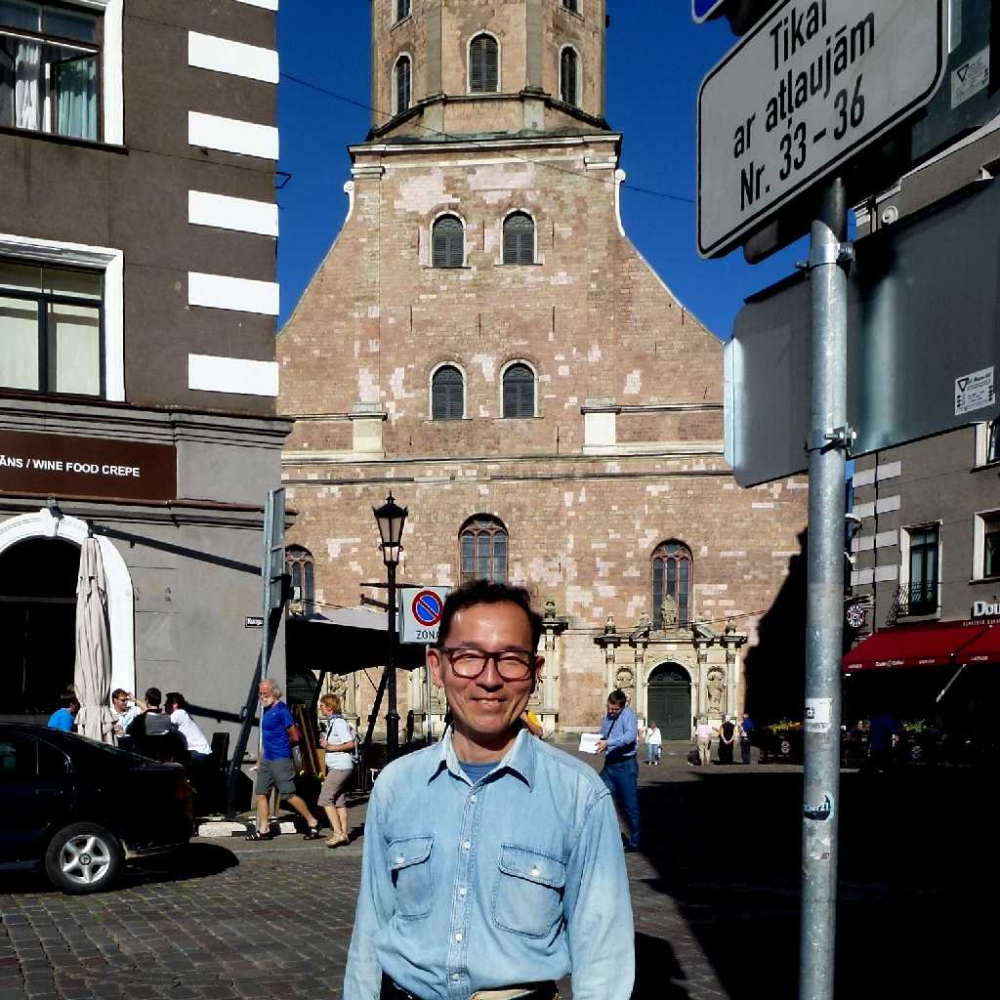

North West Historic Center of Riga
バルトの真珠と讃えられるリガの街並み

North East Historic Center of Riga

South East Historic Center of Riga

South West Historic Center of Riga
２世紀頃からダウガヴァ川は東ローマ帝国との交易ルートとして利用さていたため交易地として栄え１２世紀よりドイツ人が入植し始め１３世紀には北方十字軍が組織されバルト海とロシアとの交易拠点として繁栄したためドイツよりドイツらしい都市と云われている
 
June 29 2012 St. Peter's Church Riga
高さ１２３mの聖ペテロ教会の尖塔からリガ旧市街を望む